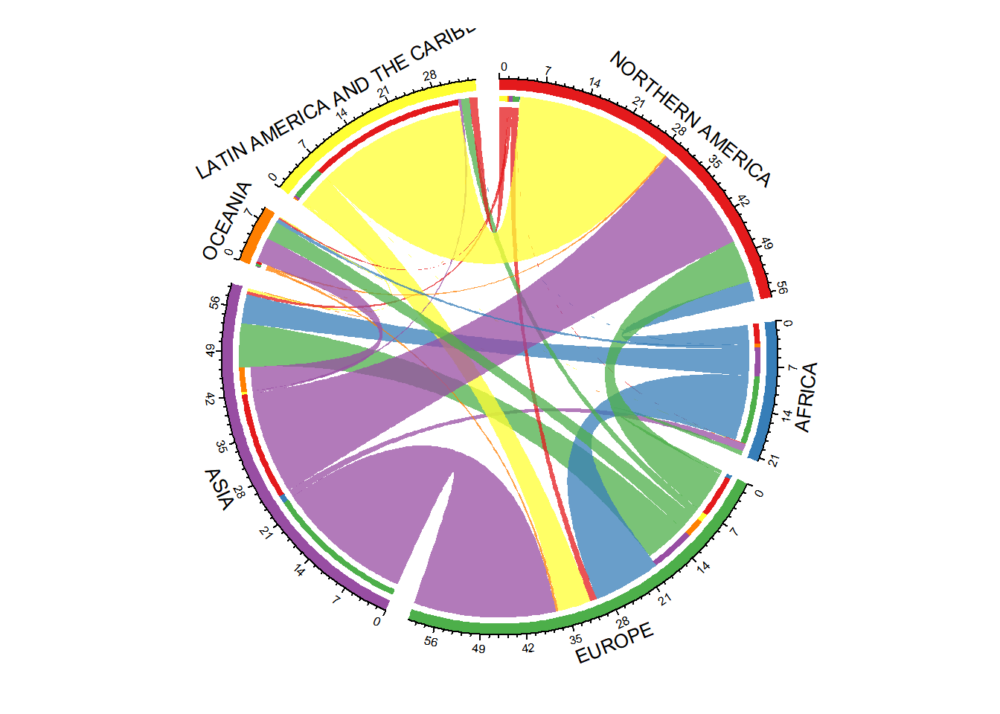

Chapter 10 Chord Diagrams for Visualising Bilateral Migration
10.1 .
10.1.1 Background
- Visualizing bilateral migration is not straightforward
- Difficult to represent the geographic and temporal aspect at the same time
- Many different approaches
- Difficult to satisfy everyones tastes
- In this class will illustrate two non-map based approaches
- Chord Diagrams
- Alluvial or Sankey Plots
- Non-map based approaches
- Provide clearer visual guide for geographically small areas that can be overwhelmed on a map
- Include more bilateral connections
10.1.2 Map Based - The Emigrants of the World, Minard 1858.
10.1.3 Flowline Maps
10.1.4 Criticised New York Times refugee flow map
10.1.5 Martin Grandjeans attempt to rectify
10.2 Chord Diagram
10.2.1 Chord Diagrams
- First chord diagrams introduced by Martin Krzywinski in 2007.
https://www.nytimes.com/imagepages/2007/01/22/science/20070123_SCI_ILLO.html
- Used to facilitate the identification and analysis of similarities and differences arising from comparisons of genomes
- Displays relationships between pairs of positions by the use of ribbons, which encode the position, size, and orientation of related genomic elements
- Developed into Circos software in Perl by Krzywinski et al. (2009)
http://circos.ca/
10.2.2 New York Times 2007
10.2.3 Chord Diagrams with Migration Data
- Interactive chord diagram plots introduced into rr.js library by Bostock
- First used to illustrate migration patterns by data journalist Chris Walker in 2013
- Mapping Americas Restless Interstate Migration Without a Map
https://www.wired.com/2013/11/mapping-migration-without-a-map/
- Mapping Americas Restless Interstate Migration Without a Map
- Does not show the direction of move until mouse-over.
- Nikola Sander adapted Circos software to add directional indicators for flows
- First used in Abel and Sander (2014). Quantifying Global International Migration Flows. Science, 343 (6178).
- Interactive version at
http://download.gsb.bund.de/BIB/global_flow/
10.2.4 Chord Diagrams with Migration Data
10.2.5 Chord Diagrams with Migration Data
10.3 circlize
10.3.1 Chord Diagrams in R
- Some drawbacks to the Circos based plots
- Inflows plotted first on each sector
- Chords for smaller flows overlap larger flows
- Hides smallest flows
- Not easy to detect direction of flows
- Addition of direction arrows usually require some further touch using a second piece of software, e.g.Photoshop or Illustrator
- Problematic for replicability
- In recent years a number of R packages that implement similar plots as the Circos software have appeared on CRAN
- The circlize R package by Gu et al. (2014) is perhaps the most complete and accessible for non-genomic data
- Built on base R graphics package
- Includes a
chordDiagram()function- Extensive documentation of the
chordDiagram()function in Chapters 13-15 of the circlize book.
- Extensive documentation of the
10.3.2 UN international migrant stock data 2020
library(tidyverse)
un <- read_csv(file = "data/un_desa_ims_tidy.csv")
un## # A tibble: 259,357 x 6
## year stock por_name por_code pob_name pob_code
## <dbl> <dbl> <chr> <dbl> <chr> <dbl>
## 1 1990 152986157 WORLD 900 WORLD 900
## 2 1995 161289976 WORLD 900 WORLD 900
## 3 2000 173230585 WORLD 900 WORLD 900
## 4 2005 191446828 WORLD 900 WORLD 900
## 5 2010 220983187 WORLD 900 WORLD 900
## 6 2015 247958644 WORLD 900 WORLD 900
## 7 2020 280598105 WORLD 900 WORLD 900
## 8 1990 15334807 WORLD 900 Sub-Saharan Africa 947
## 9 1995 16488973 WORLD 900 Sub-Saharan Africa 947
## 10 2000 15638014 WORLD 900 Sub-Saharan Africa 947
## # ... with 259,347 more rows10.3.3 UN international migrant stock data 2020
- Use continent to continent flows in 2020
# codes for contents
cc <- c(903, 935, 908, 904, 905, 909)
d <- un %>%
filter(por_code %in% cc,
pob_code %in% cc,
year == 2020)
d## # A tibble: 36 x 6
## year stock por_name por_code pob_name pob_code
## <dbl> <dbl> <chr> <dbl> <chr> <dbl>
## 1 2020 20917565 AFRICA 903 AFRICA 903
## 2 2020 1207631 AFRICA 903 ASIA 935
## 3 2020 648455 AFRICA 903 EUROPE 908
## 4 2020 32524 AFRICA 903 LATIN AMERICA AND THE CARIBBEAN 904
## 5 2020 53563 AFRICA 903 NORTHERN AMERICA 905
## 6 2020 14483 AFRICA 903 OCEANIA 909
## 7 2020 4720103 ASIA 935 AFRICA 903
## 8 2020 68497762 ASIA 935 ASIA 935
## 9 2020 7169630 ASIA 935 EUROPE 908
## 10 2020 414658 ASIA 935 LATIN AMERICA AND THE CARIBBEAN 904
## # ... with 26 more rows10.3.4 UN international migrant stock data 2020
- Remove within continent stocks (will dominate the plot) and focus on inter-continent migrants
d <- d %>%
rename(orig = pob_name,
dest = por_name) %>%
filter(orig != dest) %>%
select(-contains("code"))
d## # A tibble: 30 x 4
## year stock dest orig
## <dbl> <dbl> <chr> <chr>
## 1 2020 1207631 AFRICA ASIA
## 2 2020 648455 AFRICA EUROPE
## 3 2020 32524 AFRICA LATIN AMERICA AND THE CARIBBEAN
## 4 2020 53563 AFRICA NORTHERN AMERICA
## 5 2020 14483 AFRICA OCEANIA
## 6 2020 4720103 ASIA AFRICA
## 7 2020 7169630 ASIA EUROPE
## 8 2020 414658 ASIA LATIN AMERICA AND THE CARIBBEAN
## 9 2020 538199 ASIA NORTHERN AMERICA
## 10 2020 101725 ASIA OCEANIA
## # ... with 20 more rows10.3.5 Default chordDiagram()
- The
chordDiagram()function can take either amatrixordata.frameobject as first argumentxfor the data. - I prefer the latter as they are much easier to create and manipulate (using dplyr and other tidyverse packages).
- When using a
data.frame, the first three columns should correspond to the origin, destination and size of connection. - Columns can take any name, but must be in that order.
- Will also work with
tbl_df(tibble)
- When using a
- Many options in
chordDiagram(), that by default are not ideal for displaying migration data
library(circlize)
# first three columns not origin, destination, connection (in that order)
chordDiagram(x = d)10.3.6 Default chordDiagram()
- Move the
orig,destandstockcolumns to the left of the data frame using therelocate()function in the dplyr package
d <- relocate(d, orig, dest, stock)
d## # A tibble: 30 x 4
## orig dest stock year
## <chr> <chr> <dbl> <dbl>
## 1 ASIA AFRICA 1207631 2020
## 2 EUROPE AFRICA 648455 2020
## 3 LATIN AMERICA AND THE CARIBBEAN AFRICA 32524 2020
## 4 NORTHERN AMERICA AFRICA 53563 2020
## 5 OCEANIA AFRICA 14483 2020
## 6 AFRICA ASIA 4720103 2020
## 7 EUROPE ASIA 7169630 2020
## 8 LATIN AMERICA AND THE CARIBBEAN ASIA 414658 2020
## 9 NORTHERN AMERICA ASIA 538199 2020
## 10 OCEANIA ASIA 101725 2020
## # ... with 20 more rowschordDiagram(x = d)## There are more than one numeric columns in the data frame. Take the
## first two numeric columns and draw the link ends with unequal width.
##
## Type `circos.par$message = FALSE` to suppress the message.10.3.7 Default chordDiagram()
- Avoid chord link ends with unequal widths at each base by using only one numeric column in
d
d <- select(d, orig, dest, stock)
d## # A tibble: 30 x 3
## orig dest stock
## <chr> <chr> <dbl>
## 1 ASIA AFRICA 1207631
## 2 EUROPE AFRICA 648455
## 3 LATIN AMERICA AND THE CARIBBEAN AFRICA 32524
## 4 NORTHERN AMERICA AFRICA 53563
## 5 OCEANIA AFRICA 14483
## 6 AFRICA ASIA 4720103
## 7 EUROPE ASIA 7169630
## 8 LATIN AMERICA AND THE CARIBBEAN ASIA 414658
## 9 NORTHERN AMERICA ASIA 538199
## 10 OCEANIA ASIA 101725
## # ... with 20 more rowschordDiagram(x = d)10.4 Sectors
10.4.1 Sector Axis
- Edit the bilateral counts to a sensible scale to ensure the axis labels are legible.
d <- mutate(d, stock = stock/1e6)
d## # A tibble: 30 x 3
## orig dest stock
## <chr> <chr> <dbl>
## 1 ASIA AFRICA 1.21
## 2 EUROPE AFRICA 0.648
## 3 LATIN AMERICA AND THE CARIBBEAN AFRICA 0.0325
## 4 NORTHERN AMERICA AFRICA 0.0536
## 5 OCEANIA AFRICA 0.0145
## 6 AFRICA ASIA 4.72
## 7 EUROPE ASIA 7.17
## 8 LATIN AMERICA AND THE CARIBBEAN ASIA 0.415
## 9 NORTHERN AMERICA ASIA 0.538
## 10 OCEANIA ASIA 0.102
## # ... with 20 more rowschordDiagram(x = d)10.4.2 Sector ordering
- Sector ordering is alphabetical by default
- Can specify order using
orderargument and pass a vector - Try to order so that neighboring regions are next each other
r <- tibble(reg = union(d$orig, d$dest))
r## # A tibble: 6 x 1
## reg
## <chr>
## 1 ASIA
## 2 EUROPE
## 3 LATIN AMERICA AND THE CARIBBEAN
## 4 NORTHERN AMERICA
## 5 OCEANIA
## 6 AFRICA10.4.3 Sector ordering
r <- r %>%
mutate(reg_order = c(4, 3, 6, 1, 5, 2)) %>%
arrange(reg_order)
r## # A tibble: 6 x 2
## reg reg_order
## <chr> <dbl>
## 1 NORTHERN AMERICA 1
## 2 AFRICA 2
## 3 EUROPE 3
## 4 ASIA 4
## 5 OCEANIA 5
## 6 LATIN AMERICA AND THE CARIBBEAN 6# order sectors
chordDiagram(x = d, order = r$reg)10.4.4 Orientation and gaps
- The
circos.par()function controls the overall layout parameters of the graphic display - Use
circos.par()to setgap.degreethe degree of gaps between sectors are set - defaultgap.degree = 1start.degreethe degree from three oclock where the first sector appears - defaultstart.degree = 0
- Anything set via
circos.par()will be fixed for all remaining pots - Reset to default graphic parameters using
circos.clear()or overwrite with newcircos.par()
# increase gaps
circos.par(gap.degree = 5)
chordDiagram(x = d, order = r$reg)# rotate
circos.par(start.degree = 90)
chordDiagram(x = d, order = r$reg)10.5 Colour
10.5.1 Sector colours
- Colours are randomly generated (will change every time you plot)
- Can set to a choice using either:
grid.colcorresponding to sectors (regions/countries/areas)transparencyset by default to 0.5
r <- r %>%
mutate(col1 = c("black", "gold", "orange", "blue", "purple", "red"))
r## # A tibble: 6 x 3
## reg reg_order col1
## <chr> <dbl> <chr>
## 1 NORTHERN AMERICA 1 black
## 2 AFRICA 2 gold
## 3 EUROPE 3 orange
## 4 ASIA 4 blue
## 5 OCEANIA 5 purple
## 6 LATIN AMERICA AND THE CARIBBEAN 6 redchordDiagram(x = d, order = r$reg, grid.col = r$col1)10.5.2 Sector colour
- Can use the RColourBrewer package to generate palettes (maximum of 9 colours)
- Based on
https://colorbrewer2.org/
- Based on
library(RColorBrewer)
r <- r %>%
mutate(col2 = brewer.pal(n = 6, name = "Set1"),
col3 = c("Red", rep("Grey", times = 5)))
r## # A tibble: 6 x 5
## reg reg_order col1 col2 col3
## <chr> <dbl> <chr> <chr> <chr>
## 1 NORTHERN AMERICA 1 black #E41A1C Red
## 2 AFRICA 2 gold #377EB8 Grey
## 3 EUROPE 3 orange #4DAF4A Grey
## 4 ASIA 4 blue #984EA3 Grey
## 5 OCEANIA 5 purple #FF7F00 Grey
## 6 LATIN AMERICA AND THE CARIBBEAN 6 red #FFFF33 GreychordDiagram(x = d, order = r$reg, grid.col = r$col2)chordDiagram(x = d, order = r$reg, grid.col = r$col2, transparency = 0.25)chordDiagram(x = d, order = r$reg, grid.col = r$col3)10.5.3 Chord colours
- Chord colours follow the origin sector. We can specify different colours using
colcorresponding to links (bilateral migration data)link.visiblewill hide particular chords
d <- d %>%
# highlight Asia to Europe flows
mutate(link_col1 = ifelse(test = orig == "ASIA" & dest == "EUROPE",
yes = "black", no = "grey"),
# show only flows out or into Asia
show_link = orig == "ASIA" | dest == "ASIA")
d## # A tibble: 30 x 5
## orig dest stock link_col1 show_link
## <chr> <chr> <dbl> <chr> <lgl>
## 1 ASIA AFRICA 1.21 grey TRUE
## 2 EUROPE AFRICA 0.648 grey FALSE
## 3 LATIN AMERICA AND THE CARIBBEAN AFRICA 0.0325 grey FALSE
## 4 NORTHERN AMERICA AFRICA 0.0536 grey FALSE
## 5 OCEANIA AFRICA 0.0145 grey FALSE
## 6 AFRICA ASIA 4.72 grey TRUE
## 7 EUROPE ASIA 7.17 grey TRUE
## 8 LATIN AMERICA AND THE CARIBBEAN ASIA 0.415 grey TRUE
## 9 NORTHERN AMERICA ASIA 0.538 grey TRUE
## 10 OCEANIA ASIA 0.102 grey TRUE
## # ... with 20 more rows10.5.4 Chord colours
- Pass the chord specific settings to
chordDiagram()
chordDiagram(x = d, order = r$reg,
grid.col = r$col2, col = d$link_col1)chordDiagram(x = d, order = r$reg,
grid.col = r$col2, link.visible = d$show_link)
10.6 Chords
10.6.1 Direction
- Distinguish direction of bilateral link using
- Different heights at the start and end of the chord links
- Arrows
- Combination of both
- Set in
chordDiagram()usingdirectional = 1(from link goes from first to second column)direction.typearguments
# drop link_col column
d$link_col1 <- NULL
# as used by Sander, default of direction.type = "diffHeight"
chordDiagram(x = d, order = r$reg, grid.col = r$col2, transparency = 0.25,
directional = 1)
# default arrows are too much
chordDiagram(x = d, order = r$reg, grid.col = r$col2, transparency = 0.25,
directional = 1, direction.type = c("diffHeight", "arrows"))# getting there...
chordDiagram(x = d, order = r$reg, grid.col = r$col2, transparency = 0.25,
directional = 1, direction.type = c("diffHeight", "arrows"),
link.arr.type = "big.arrow")10.7 Direction
- Connect the base of the link to the sector through combination of
- Adjusting the difference in height between the beginning and end of chords
- Removing padding between the axis and the grid (the inner circle where the chords are)
- Set the
diffHeightargument to a negative number so that the start of the chord is longer than then end.- Removes the destination sector bars (chart junk IMO).
# extreme height difference
chordDiagram(x = d, order = r$reg, grid.col = r$col2, transparency = 0.25,
directional = 1, direction.type = c("diffHeight", "arrows"),
link.arr.type = "big.arrow", diffHeight = -0.2)# height difference looks good
chordDiagram(x = d, order = r$reg, grid.col = r$col2, transparency = 0.25,
directional = 1, direction.type = c("diffHeight", "arrows"),
link.arr.type = "big.arrow", diffHeight = -0.05)10.7.1 Direction
- Set in the
track.marginoption ofcircos.par()to remove the padding- Default of
track.margin = c(0.01, 0.01)for chord diagrams - one percent between label names and the axis, and one percent between the axis and the grid (the chords)
- Default of
# set second margin to zero
circos.par(track.margin = c(0.01, 0))
chordDiagram(x = d, order = r$reg, grid.col = r$col2, transparency = 0.25,
directional = 1, direction.type = c("diffHeight", "arrows"),
link.arr.type = "big.arrow", diffHeight = -0.05)# set second margin to -0.01 to get seamless overlap
circos.par(track.margin = c(0.01, -0.01))
chordDiagram(x = d, order = r$reg, grid.col = r$col2, transparency = 0.25,
directional = 1, direction.type = c("diffHeight", "arrows"),
link.arr.type = "big.arrow", diffHeight = -0.05)10.7.2 Chord ordering
- Number of options in
chordDiagram()to control the chord link orderlink.sortsort the order the links from largest to smaller as the enter and exit the plot, by defaultFALSElink.largest.ontopsort the order of the plotting of the links so that the smallest are given less prominence. By defaultFALSE, so plots the links in the last sector last and they appear more predominant
# sort links on sectors
chordDiagram(x = d, order = r$reg, grid.col = r$col2, transparency = 0.25,
directional = 1, direction.type = c("diffHeight", "arrows"),
link.arr.type = "big.arrow", diffHeight = -0.05,
link.sort = TRUE)# sort link plotting order
chordDiagram(x = d, order = r$reg, grid.col = r$col2, transparency = 0.25,
directional = 1, direction.type = c("diffHeight", "arrows"),
link.arr.type = "big.arrow", diffHeight = -0.05,
link.sort = TRUE, link.largest.ontop = TRUE)10.8 Labels
10.8.1 Labels
- Multiple options for the orientation of labels, set via
inside,outside,clockwise,reverse.clockwise,downward,bending.insideandbending.outside- Cannot pass to
chordDiagram()so we have to first useannotationTrackoption to only plot thegrid(the chords) andaxis(default forannotationTrack = c("name", "grid", "axis"))
- To add the labels we use the
panel.funargument incircos.track().- Works like a for loop, cycling through each sector of the track (the circle)
- For each sector we use
circos.text()to add labels at a specifiedxandylocation - Can also set the
facingorientation of the labels as well as other options such as text size (cex) and colour (col)
# drop the name labels
chordDiagram(x = d, order = r$reg, grid.col = r$col2, transparency = 0.25,
directional = 1, direction.type = c("diffHeight", "arrows"),
link.arr.type = "big.arrow", diffHeight = -0.05,
link.sort = TRUE, link.largest.ontop = TRUE,
annotationTrack = c("grid", "axis"))
10.8.2 Labels
- No room for labels. We can create this using the
preAllocateTracksargument.- Requires a list of graphical parameters
- Set
track.heightas a percentage of plot area.
chordDiagram(x = d, order = r$reg, grid.col = r$col2, transparency = 0.25,
directional = 1, direction.type = c("diffHeight", "arrows"),
link.arr.type = "big.arrow", diffHeight = -0.05,
link.sort = TRUE, link.largest.ontop = TRUE,
annotationTrack = c("grid", "axis"),
preAllocateTracks = list(track.height = 0.1))
# add labels
circos.track(track.index = 1, bg.border = NA, panel.fun = function(x, y) {
# create temporary objects for the sector name and x-limits
reg_lab <- get.cell.meta.data("sector.index")
xx <- get.cell.meta.data("xlim")
# use the temporary objects to add text in each sector of the track
circos.text(x = mean(xx), y = 1, labels = reg_lab, facing = "bending")
})10.8.3 Labels
- Still not enough room for longer labels.
- Increase the
track.height - Create two labels for some regions
- Reduce the font size using
cexincircos.text()- default iscex = 1
- Increase the
str_wrap(string = r$reg, width = 14)## [1] "NORTHERN\nAMERICA" "AFRICA"
## [3] "EUROPE" "ASIA"
## [5] "OCEANIA" "LATIN AMERICA\nAND THE\nCARIBBEAN"r <- r %>%
# title case for labels
mutate(lab = str_to_title(string = reg),
lab = str_replace(string = lab, pattern = "And The", replacement = "&"),
# use str_wrap to split longer labels into two
lab = str_wrap(string = lab, width = 14)) %>%
# separate based on \n
separate(col = lab, into = c("lab1", "lab2"), sep = "\n", fill = "right") %>%
# positioning for first lab1, needs to be further out if lab2 exists
mutate(y = ifelse(test = !is.na(lab2), yes = 1, no = 0.8))10.8.4 Labels
- Still not enough room for longer labels.
- Increase the
track.height - Create two labels for some regions
- Reduce the font size using
cexincircos.text()- default iscex = 1
- Increase the
r## # A tibble: 6 x 8
## reg reg_order col1 col2 col3 lab1 lab2 y
## <chr> <dbl> <chr> <chr> <chr> <chr> <chr> <dbl>
## 1 NORTHERN AMERICA 1 black #E41~ Red Nort~ Amer~ 1
## 2 AFRICA 2 gold #377~ Grey Afri~ <NA> 0.8
## 3 EUROPE 3 orange #4DA~ Grey Euro~ <NA> 0.8
## 4 ASIA 4 blue #984~ Grey Asia <NA> 0.8
## 5 OCEANIA 5 purple #FF7~ Grey Ocea~ <NA> 0.8
## 6 LATIN AMERICA AND THE CARIBBEAN 6 red #FFF~ Grey Lati~ & Ca~ 110.8.5 Labels
chordDiagram(x = d, order = r$reg, grid.col = r$col2, transparency = 0.25,
directional = 1, direction.type = c("diffHeight", "arrows"),
link.arr.type = "big.arrow", diffHeight = -0.05,
link.sort = TRUE, link.largest.ontop = TRUE,
annotationTrack = c("grid", "axis"),
# increase to 0.2 to fit two lines of labels
preAllocateTracks = list(track.height = 0.2))
circos.track(track.index = 1, bg.border = NA, panel.fun = function(x, y) {
s <- get.cell.meta.data("sector.index")
# filter to row of r for the sector's region to create a temporary rr
rr <- filter(r, reg == s)
xx <- get.cell.meta.data("xlim")
# use temporary rr to add text
circos.text(x = mean(xx), y = rr$y, labels = rr$lab1, facing = "bending",
cex = 0.8)
circos.text(x = mean(xx), y = 0.6, labels = rr$lab2, facing = "bending",
cex = 0.8)
})
10.8.6 Saving
- Always save as PDF to give scalable image
- We can zoom in very closely and we will still see the chords
- If we save a vector graphic, e.g.PNG these details will disappear.
- Use the
pdf()function before the plot to open a PDF - Use
dev.off()after the plot code to close the PDF
pdf(file = "./plot/un_stock_2019.pdf", width = 4, height = 4)
circos.par(track.margin = c(0.01, -0.01), gap.degree = 5, start.degree = 90)
chordDiagram(x = d, order = r$reg, grid.col = r$col2, transparency = 0.25,
directional = 1, direction.type = c("diffHeight", "arrows"),
link.arr.type = "big.arrow", diffHeight = -0.05,
link.sort = TRUE, link.largest.ontop = TRUE,
annotationTrack = c("grid", "axis"),
preAllocateTracks = list(track.height = 0.2))
circos.track(track.index = 1, bg.border = NA, panel.fun = function(x, y) {
s <- get.cell.meta.data("sector.index")
rr <- filter(r, reg == s)
xx <- get.cell.meta.data("xlim")
circos.text(x = mean(xx), y = rr$y, labels = rr$lab1, facing = "bending", cex = 0.8)
circos.text(x = mean(xx), y = 0.6, labels = rr$lab2, facing = "bending", cex = 0.8)
})
dev.off()10.8.7 Saving
- Left: PNG with
width = 4, height = 4 - Right: PDF with
width = 4, height = 4
- Could increase resolution of PNG with larger dimensions but at the cost of very large file sizes
10.8.8 Exercise (ex8.R)
# 0. a) Load the KOSTAT2021.Rproj file.
# Run the getwd() below. It should print the directory where the
# KOSTAT2021.Rproj file is located.
getwd()
# b) Load the packages used in this exercise
library(tidyverse)
library(migest)
library(circlize)
##
##
##
# 1. Run the code below to read in the label data in korea_cd_labels.csv taken
# from https://www.tandfonline.com/doi/full/10.1080/21681376.2018.1431149
r <- read_csv("./data/korea_cd_labels.csv")
View(r)
# 2. Run the code below to select the 2020 Korean internal migration data,
# for plotting, excluding within region movements
d <- korea_reg %>%
filter(year == 2020,
orig != dest)
d
# 3. Run the code below to check that all the regions in the object r are in the
# migration data frame d
setdiff(x = union(d$orig, d$dest), y = r$region)
# 4. Modify d to enable a more sensible plot
# 1) divide flow column by a thousand
# 2) adjust the data frame to the three relevant columns for chordDiagram()
d <- d %>%
select(-#####) %>%
mutate(flow = flow/#####)
# 5. Check the data is in the correct by format by plotting a chord diagram
# using the default settings
chordDiagram(x = #####)
# 6. Plot a chord diagram using
# a. the order of provinces from r
# b. colours from the col column in r
# c. transparency set to 0.25
chordDiagram(x = d, order = #####$region, grid.col = r$#####, ##### = 0.25)
# 7. Edit the code below to
# a. add directional arrows
# b. change the height at the start and end of the chords to -0.04
chordDiagram(x = d, order = r$#####, grid.col = r$col, transparency = 0.25,
directional = #####, direction.type = c(#####, "arrows"),
##### = "big.arrow", diffHeight = #####)
# 8. Use the circos.par function to set
# a. track margins to c(0.01, -0.01)
# d. start degree to 90
# c. gap degree to a the gap column in object r
# d. plot a chord diagram with these setting based based on the code in the
# answer above
circos.par(track.margin = c(#####, -0.01), ##### = 90, gap.degree = r$#####)
chordDiagram(x = d, order = r$region, grid.col = r$col, transparency = 0.25,
directional = 1, direction.type = c("diffHeight", "arrows"),
link.arr.type = "big.arrow", diffHeight = -0.04)
# 9. Edit below to sort the chord links
# a. into and out of each section
# b. largest links on top
chordDiagram(x = d, order = r$region, grid.col = r$col, transparency = 0.25,
directional = 1, direction.type = c("diffHeight", "arrows"),
link.arr.type = "big.arrow", diffHeight = -0.04,
link.sort = #####, link.largest.ontop = #####)
# 10. Edit the code below to
# a. plot only the grid and the axis
# b. set the track height of the label area to 0.1
chordDiagram(x = d, order = r$region, grid.col = r$col, transparency = 0.25,
directional = 1, direction.type = c("diffHeight", "arrows"),
link.arr.type = "big.arrow", diffHeight = -0.04,
link.sort = TRUE, link.largest.ontop = TRUE,
##### = c("grid", #####),
preAllocateTracks = list(track.height = #####))
# 11. Add the labels in the track by
# a. setting y position of label to 1
# b. setting text facing to bending
# c. setting the font size to 0.7
circos.track(track.index = 1, bg.border = NA, panel.fun = function(x, y) {
s = get.cell.meta.data("sector.index")
xx = get.cell.meta.data("xlim")
rr = filter(#####, region == s)
circos.text(x = mean(xx), y = #####, labels = rr$label_en,
facing = #####, ##### = 0.7)
})
# 12. Use the code in question 10 and 11 to create the PDF version of the plot
pdf(file = "./exercise/korea2020_en.pdf", width = 5, height = 5)
##### paste in here ...
dev.off()
# 13. Run the code below to check the PDF (might not work on Mac - if so,
# manually open PDF file to view)
file.show("./exercise/korea2020_en.pdf")
# 14. Complete the code below to add a second set of Korean labels.
# Note: East Asian characters require a non-standard font families - see
# ?pdfFonts for options. Might not require to set family depending on
# settings in your computer and/or RStudio
pdf(file = "./exercise/korea2020.pdf", width = 5, height = 5, family = "Korea1")
chordDiagram(x = d, order = r$region, grid.col = r$col, transparency = 0.25,
directional = 1, direction.type = c("diffHeight", "arrows"),
link.arr.type = "big.arrow", diffHeight = -0.04,
link.sort = TRUE, link.largest.ontop = TRUE,
annotationTrack = c("grid", "axis"),
preAllocateTracks = list(track.height = 0.1))
circos.track(track.index = 1, bg.border = NA, panel.fun = function(x, y) {
s = get.cell.meta.data("sector.index")
##### <- filter(r, region == s)
xx = get.cell.meta.data("xlim")
circos.text(x = mean(xx), y = 1.5, labels = rr$label_en,
facing = "bending", cex = 0.7)
circos.text(x = mean(xx), y = 0.9, labels = rr$#####,
facing = "bending", cex = 0.7)
})
dev.off()
file.show("./exercise/korea2020.pdf")
# 15. Run the code below to check the PDF (might not work on Mac - if so,
# manually open PDF file to view)
file.show("./exercise/korea2020.pdf")References
Abel, Guy J., and Nikola Sander. 2014. Quantifying Global International Migration Flows. Science 343 (6178): 152022. https://doi.org/10.1126/science.1248676.
Gu, Z., Lei Gu, Roland Eils, Matthias Schlesner, and Benedikt Brors. 2014. circlize implements and enhances circular visualization in R. Bioinformatics 30 (19): 281112. https://doi.org/10.1093/bioinformatics/btu393.
Krzywinski, Martin, Jacqueline Schein, Inan Birol, Joseph Connors, Randy Gascoyne, Doug Horsman, Steven J. Jones, and Marco A. Marra. 2009. Circos: An information aesthetic for comparative genomics. Genome Research 19 (9): 163945. https://doi.org/10.1101/gr.092759.109.